点击左上蓝字“高小猫”关注我
微信号：gaoxiaomao88
点击左上蓝字“高小猫”关注我
微信号：gaoxiaomao88
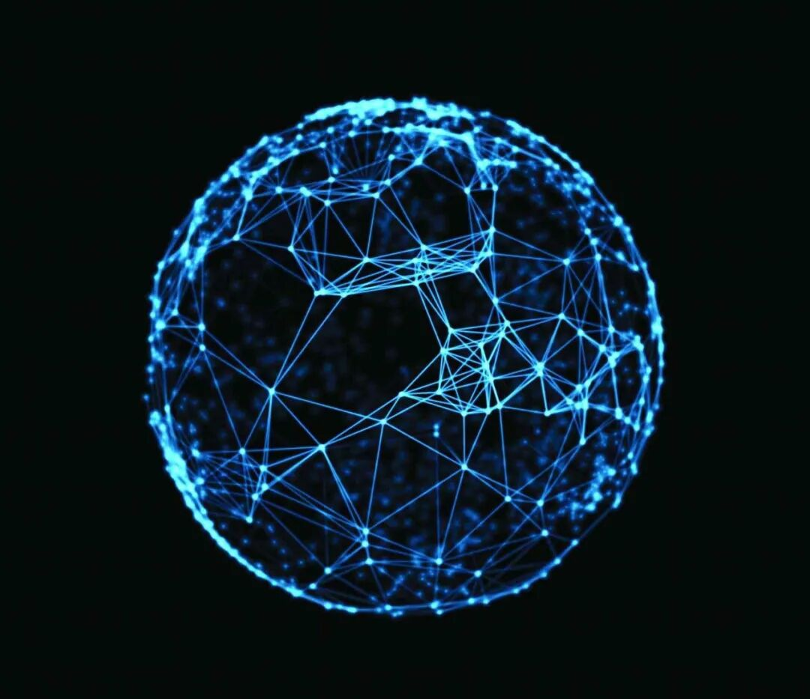
一. 无奈的妥协
这是今天的互联网。
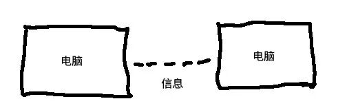
如果我跟你说我想要在互联网上传输一些真实的东西，比如一块金子，你一定会觉得我脑子有问题。
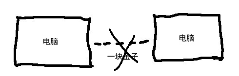
不仅上面这个事情不行，连所有权的转移都不能在互联网上不涉及到第三方地，真正地点对点地进行。
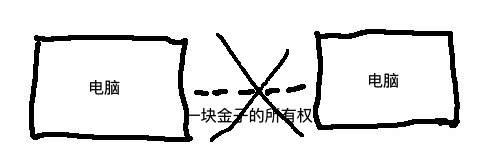
之所以上面的这个事情不行，是因为互联网上能且仅仅能传输信息，而一切的信息都是可以复制的。
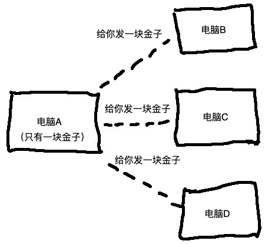
为了解决这个问题，我们只好找一个大家都信得过的公证方来做这件事情。
互联网上一切所有权的转让，一定要通过一个公证方。
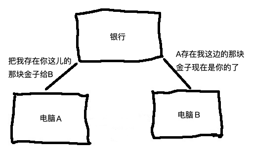
只有收到这种权威的公证方的确认，我们才能肯定我们拿到了金子的所有权。
但是这种方式只是一种妥协。
一旦有了权威的公证方。如果这个公证方因为某些原因变卦，你会发现你的东西似乎都不属于你了。
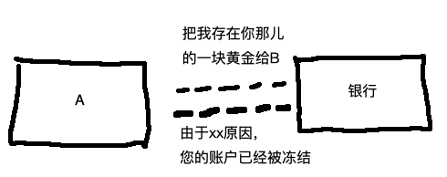
我们最想要的，其实还是下面这样。
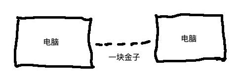
二. 一个不用妥协的方案
要想通过互联网发送所有权这样的东西，其实核心要解决的就是下面这个问题：如何让人不能发好多份。
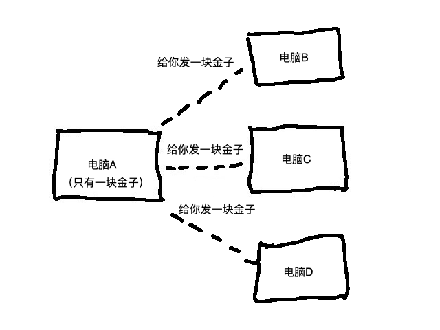
一直到比特币出现以前，这个问题一直无人能够解决。
而比特币的出现，第一次让人类可以在互联网上不用通过公证方就可以转移所有权。
用比特币区块链发送的转账消息，是不能重复发送的。
一块钱发给了你，就不再能发给别人了。
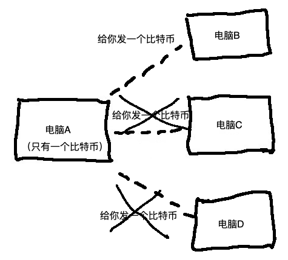
从此以后，我们就可以在互联网上做类似下面这件事情了。
........
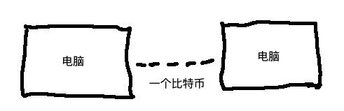
可能这件事情很简单，但是其实它的意义重大。
三. 能在互联网上传输所有权有什么意义？
首先我们反思一下，互联网的本质是什么？
就是让人们可以远距离地点对点地大量地传输多媒体信息。
电视电台可以远距离地传输多媒体信息，但是这些信息必须要通过一个中心化的机构来发送。普通用户只有接受的能力，没有发送的能力。
而就是这个“点对点”的区别，催生出了一整个互联网产业。
现在区块链让互联网不仅仅能够点对点地传输信息，还可以点对点地传输所有权，也就是资产。
想想看，这意味着什么？
。。。。
确切的答案我也不知道。就正如当年电视风行的时候，人们面对着刚刚出现的互联网，也有同样的疑问：
我为什么需要点对点地给别人传输多媒体信息呢？电视里的东西不是蛮好看的嘛？
现在的我们也会有类似的疑惑：我为什么需要点对点地给别人发送资产呢？通过银行不是蛮好的嘛?
我能想到的一些区别仅仅是：
- 有了这个以后，资产可以真正由自己控制，而不是由银行。
- 钱的流动将会更加自由，正如互联网让信息的流动更加自由一样。
- 钱的流动的自由将会催生金融产业的彻底变革
过去的二十年是互联网把整个世界互联网化了的二十年，基本上传统的产业都被互联网产业重做了一遍，而且这个进程还没有完全走完。
未来的二十年，将会是互联网上的区块链把整个世界的资产区块链化的二十年。
四. 资产的本质
很多人会说，比特币不就是一串代码嘛？我听说任何人都可以发一个币，根本都是空气。
不过类似的陈述也是成立的：黄金不就是一种黄色的石头嘛？
之所以黄金成为了一种特殊的石头，而别的鹅卵石成为了没人要的石头，不就是因为它独特的历史沉淀嘛？
今天要想让大家觉得黄金不值钱，是不是非常难？任何一个国家，就算强如美国，也无法做到？
比特币跟别的币的区别，就是比特币独特的历史沉淀。
要想让大家觉得有一个币比比特币更加值钱，那就好像要让大家觉得某一种石头比黄金更加值钱一样。
我觉得今天就好像大家会觉得黄金是值钱的东西，是对抗法币贬值的手段一样。比特币这种币也渐渐成为一种储值的手段，另一种对抗法币贬值的手段。
只不过这种东西是可以在网络上流动的。
五. 从猜想到既定事实
如果说几年前比特币还仅仅是一场社会实验的话，现在的比特币已经事实上成为了互联网上的黄金。
在过去的几年，我们已经看到了各种各样眼花缭乱的区块链技术，无数相比比特币性能更优，模式更强的币种层出不穷。
但是无论时代怎么变化，只要市场动荡，人心不稳的时候，一次又一次，在区块链世界里的人们，都会把别的币兑换成比特币以便规避风险。
等到区块链把整个世界的资产区块链化的时候，这个世界的黄金：比特币将会。。。。。

扫上面二维码关注我，也欢迎留言告诉我你的想法~